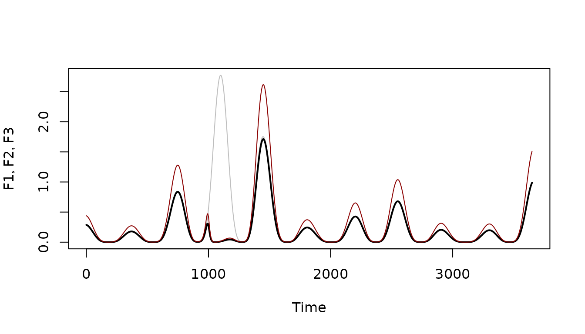

The function make_ts_function returns a time series
function:
?make_ts_functionIn studies, we will often need functions that output the value of some exogenous variable over time. These often hold information – the trace – from some other analysis, or trace function.
This package — ramp.func — has
utilities to construct and modify multiplicative composed
time series functions. Each function is the product of
four components:
\[ x(t) = \bar x \times F_S(t) \times F_T(t) \times F_K(t) \]
\(\bar x\) is the mean value over an interval \((t_0, t_1)\):
\(F_S(t)>0\) is a seasonality function
\(F_T(t)>0\) is a trend function
\(F_K(t)>0\) is a shock function
When calling make_ts_function, the user can normalize
with or without the shock function, and the value of the time interval
is set by passing a vector of values with a non-zero range. A
normalizing constant is set such that:
\[\int_{t_0}^{t_1} F_S(t)\; F_T(t); F_K(t)\; dt = \bar x\left( t_1-t_0 \right)\]
Example
Components
This creates a spline function:
set.seed(3482)
N <- 7
tt <- c(-365, seq(0, 10*365, length.out=N), 7300)
yy <- (c(1, rlnorm(N-1, 0, 1), 2, 1))^.4
tp <- makepar_F_spline(tt, yy, 2)
Ft <- make_function(tp)This creates a seasonal pattern function:
sp <- makepar_F_sin(bottom = 0.1, pw=2)
Fs <- make_function(sp)This creates a shock:
kp <- makepar_F_sharkbite(D=1000, L=300)
Fk <- make_function(kp)We can plot the components on the same axes:
tm <- seq(0, 3650, by=5)
plot(tm, Ft(tm), type = "l", ylim = range(0, Ft(tm)), xlab = "Times", ylab = expression(list(F[S], F[T], F[K])))
lines(tm, Fs(tm))
lines(tm, Fk(tm))
Normalizing Constant
We let F1 be a function that gets normalized with the
shocks in place (black); F2 the same function but
normalized without the shocks (dark red), and F3 the
function without the shocks (grey).
F1 <- make_ts_function(0.3, times=tm,
season_par <- sp, trend_par <- tp,
shock_par <- kp, norm_with_shocks = FALSE)
integrate(F1, 0, 3650)$value/3650## [1] 0.1962408
F2 <- make_ts_function(0.3, times=tm,
season_par <- sp, trend_par <- tp,
shock_par <- kp, norm_with_shocks=TRUE)
integrate(F2, 0, 3650)$value/3650## [1] 0.3
F3 <- make_ts_function(0.3, times=tm,
season_par <- sp, trend_par <- tp,
norm_with_shocks = TRUE)
integrate(F3, 0, 3650)$value/3650## [1] 0.3Note that F1 and F2 have the same shape, but the mean of F1 is lower because it ignored the shock to set the normalizing constant, which nullified one of the seasonal peaks.
plot(tm, F3(tm), type = "l", col = "grey", ylab = expression(list(F1, F2, F3)), xlab = "Time")
lines(tm, F1(tm), lwd=2)
lines(tm, F2(tm), col = "darkred")